Informatics an ecological algorithm exploration
E-mail address: tiago.eckhardt@hotmail.com
Author name: Tiago João Rodrigues Sancho Gravito Baptista Eckhardt
Abstract— This paper makes an insight into the connection between the human and informatics with the aim of acquiring a thought capable of responding to the current needs in the world by demonstrating the link between informatics and health. By doing so, a practical case of the use of information in agriculture and e-commerce on a case study is analyzed. Connecting the same to health making a research to find possibilities to solve the dry eye disorder using for example accurate natural vegetable solutions. Furthermore, simulating nature swarm algorithm in a computer. The results reveal potential algorithm knowledge for new perspectives and concerns in structured form aiding for instance information, daily practices, software development or world sustainability. The research makes a investigation of an optimized form of automation in an ecological balanced way. An argumentative discussion is also held, coming to the conclusion that ecological thought is ambitious since it gives the focus on biological solutions to informatics and that leads to question further forms of algorithmic optimized efficiency in the ecosphere with hope for a better understanding of nature.
Terms of the index – informatics, ecology, e-commerce, agriculture, communication, algorithms, round-robin, swarm, roundswarm, automation
Introduction
This paper makes a point of situation in relation to the present. Investigates course of actions that minimize the climate change effect. Ascertaining solutions presented, inquiries about future possibilities for action. One of the purposes of information technology is to make autonomous communication. To grasp it is necessary to explore, this is done by the constant search for variables in the environment. Once the variables are known, an answer can be formulated for sustainable automation. Conducting research in information to combine forms of sustainability where informatics can be a source of solutions, exploration is therefor essential to understand how is useful. Doing a post-structuralist analysis of knowledge, aggregating ideas covering several disciplines. With the use of positivism to value a biocentric condition where biology is placed over all other sciences. Biological learning seems to be done at a slow pace while computers learn with huge potential[1]. The Godel’s theorem tells us that the mathematical system is inconsistent and incomplete, questioning the system itself. The representation of an apple in a number is a simplification of reality, since each one is unique. A sum of the quantity is possible leaving other parameters that characterize it, which we could be infinitely defining, such as its sweetness, color and size. Probably the best way of describing an apple in a scientific manner in our days would be showing the genome. In the same way, questioning the discipline and relevance to bring it as close as possible to practice, rediscovering it, increasing its precision. In view of the interpretation of literature in a hermeneutic way in order to make known concepts aiming at gaining knowhow to improve the planet at the ecological and social level. It makes an environmental perspective in the search of harmony where holistic and reductionistic algorithms authenticate informatics as a binding solution. Starting by searching for the word informatics in elsevier to increase the understanding of the theme. Gathering results by operating with command line using Bash getting twenty-five results with the title “informatics” through the API (application programming interface) of https://api.elsevier.com page with the single line.
curl -X GET -H "Content-type: application/json" -H "Accept: application/json" -d '{"param0":"pradeep"}' "https://api.elsevier.com/content/search/scopus?start=0&count=25&query=TITLE(informatics)&sort=refeid&apiKey=05ded28bb1d4f0f8e204de96dc9d1c2&httpAccept=application/json" | jq '.' | grep 'dc:title'
The further search for the same keyword in springer of http://api.springer.com page and from ten results the characters health appear eight times while using cURL (client uniform resource locator).
curl -X GET -H "Content-type: application/json" -H "Accept: application/json" "http://api.springer.com/meta/v2/pam?q=(title:"informatics")&api_key=86ef94a23766e2fc49db09846dfa2264" | tr ' ' '\n' | grep -c 'health'
From the results found informatics is mainly associated with health. This interdisciplinary merge is helping human well-being by establishing knowledge in a logical, logarithmic, automatic way to make tangible the abstract condition of information derived from science and art [2, p. 2]. Ecology is objective with its intention with nature. The combination of them with scientific and artistic knowledge pondering the information guiding biology to a humanistic objective. It combines several components bringing complexity to the information architecture directing a purpose [3]. It is encompassing solicitude with nature in this information that the design becomes ecological covering the importance of its homeostatic balance and cooperating with computerization through the maximization, effectiveness and optimization of data. That with the help of databases that contain knowledge and settings of variables unveil resolutions that can be carried out with learning in health with medicine [4, p. 130].
Health
As expressed by Professor Sérgio Machado dos Santos: "…opportunities in research are increasing in interdisciplinarity. At the level of medicine, for example, I have strong hopes that there will be a good blend between medicine, computer science and electronics..." [5, p. 244]. This interconnection of knowledge is constant due to its inseparable applicability by necessity. There is mutual learning between informatics and medicine in which the mere fact of the possibility to consult gastronomic recipes on the Internet constitutes a modern landmark of information knowledge concerning health. Going along with what Hippocrates said, we are what we eat. Which in turn is used to prevent, mitigate or cure chronic diseases [6, 7]. Information from the world health organization advises healthy diet that can be adjusted to our habits. Boosting the opportunity of automation to the refrigerator or going even further in its production, quality control, sale and delivery from the origin.
Agriculture and electronic commerce
The Food and Agriculture Organization (FAO) is a specialized agency of the United Nations has a platform where people can learn new information and communication technologies[8]. The importance of information technology in this sense provides various ways the implementation of greenhouses, automation of sowing, irrigation and tillage. In the recognition of parameters for precision agriculture, with image renders the possibility to obtain information about the characterization of plants. Electronics also provides genome-sequencing devices from genomes[9, p. 269]. There is a chance to convert into diagrams, represented statistical patterns and compared in a simple FASTA format file with greater ease of analytical interpretation through tools in Bash such as curl, grep, wc, diff, sed, tr and awk. Professor Altamiro Barbosa Machado mentions in the book protagonists of information technologies in Portugal that "after the information society, comes the society of interconnectivity, not only of people through cooperative systems, but above all through any device" [5, p. 44]. The achievement of this communication is carried out with the use of technology in the created technosphere infrastructure of everyday life. Making possible for example the development of vaccine antigens in plants[10]. The interaction creates new freedoms of communication through platforms that facilitate interaction.
Case study
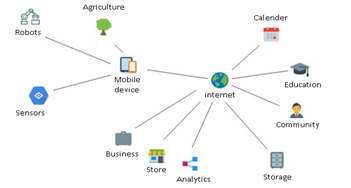
Figure 1: Interconnection of agriculture with electronic trade.
Figure 1 exemplifies a practical case of informatic interaction in agriculture and electronic commerce ensuring sedentary lifestyle in rural areas, dispersion of commerce, segmenting cultivation with intergenerational sustainability. Some of the capabilities of the Internet and a mobile device are storage, analysis, community, timing, education, sensing, and robotization. Storing data in data processing centers makes it possible to infer on the complex life cycle of knowledge, in an agglomerate way such as business mobility using travel pass[11] where information can be combined. Being the results saved, analyzed and commented on community and exchanged in Wikipedia or on facebook. The timing for forecasts with the consultation of the ipma website (Institute Portuguese of The Sea and Atmosphere). Education regarding the mode of cultivation through search engines among them google giving information for example in the expectation of certain plant. Sensing with a mobile phone[12, p. 5] provides the capture of actions for quality control quality analysis. Posting videos to youtube makes possible to enable superior cognition. This can be done with google collab and yolo algorithm. Also, the use of robots commanded via Bluetooth with gatttool moving a Lego engine for agricultural automation. Bionanotechnology uses guidance from nature at the atom level to engineer and manufacture[13, p 8]. This can be the solution for the future of computation[14]. That would also be closer to the topic of health.
Algorithm exploration
The eye is an organ of vision where the production of tears is regulated biologically. The ocular surface is amply innervated derived by the main fifth cranial nerve. Where the cornea and lid margins are particularly densely innervated. Inputs and outputs from these nerves adjusts tear secretion.[15] The homeostasis is essential to maintain equilibrium. Imbalance of homeostasis in the eye can result in a hyperosmolar, unstable tear film with associated sequelae for example increased osmolarity, inflammation, neuropathy and reduced function (compromised lubrication, hydration). [16] Conjunctival congestion is an ocular symptom of COVID‐19.[17] The eye is a characteristic of health forming a refracting surface for light entering the visual system protecting moisturizes of the cornea. [16] The tear meniscus is the surrounding line of the eye. While the tear film can be explained by a division of layers where the meibomian gland produces the lipid layer that has its primary function to decrease the surface tension of the tear film. [16] The aqueous layer enhances light refraction, prevents dehydration by lubricating the eye and the mucin layer is a gel-like structure that allows water to re-spread after each blink[18]. The aqueous layer exists as a smooth surface to enhance light refraction, and it prevents dehydration by lubricating the eye, but also contains a variety of tear proteins important for the homeostasis of the ocular surface[18]. To maintain this equilibrium informatics can help in automation by parametrization of algorithms to understand the healthy stability or rebalance. Avoiding the prevalence of the disorder is still an actual challenge. For that, the research of algorithms on what can serve of advantage to prevent, diagnose and cure the dry eye disorder.
5.1 Implications of the disease
Stress to any of layers of the tear film causes dry eye. Dry eye is a multifactorial condition mainly caused by decreased tear production or reduced tear film stability.[19] Dry eye disease indicant symptoms of pain, irritation, and visual perturbation. [20, p. 47] Increasingly, tear stability is recognized to be important for the definition and assessment of patients with dry eye. [21] Dry eye disorder it's a phenomenon that can occur due to deficiency in the aqueous component and dry evaporative also known as keratoconjunctivitis that is inflammation on the eye, the most common.
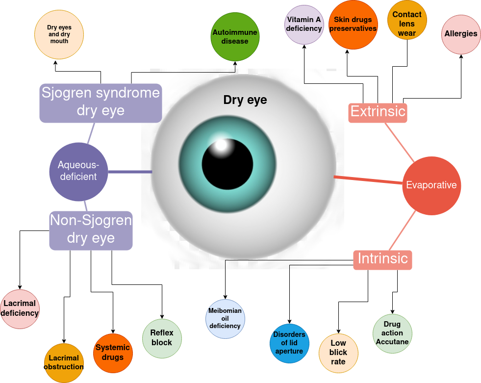 Figure 2: Dry eye causes classification
In the figure 2 are hypothetical consequences of the dry eye for aqueous-deficiency such as Sjogren syndrome that is identified by deficiency of producing lacrimal and salivary moisture where that is likely to be linked with genetics and exposure to virus or bacteria. While Non-Sjogren consequences such as lacrimal gland duct obstruction cause by aging or reflex block by the wear of contact lens and use of anesthesia. In the evaporative side as intrinsic the consequences of meibomian gland oil insufficiency, disorders on lid aperture, low blink rate and use of Accutane drug. In the evaporative extrinsic phenomenon, there is the lack of vitamin A [22, p. 303] that can be found in carrots, broccoli or cantaloupe. Also, the wear of contact lens can lower tear osmolarity. [23]
5.2 Classification of the disorder
It is essential to categorize the patients accordingly so the diagnoses can be optimized. This allows segmentation of the issue in order to objectively give pursuit a solution. In a simple triage method in short steps. The figure 3 shows a framework for management to aid the homeostatic equilibrium, starting by dividing asymptomatic from symptomatic characteristics and goes from a preventive status until the pain management range.
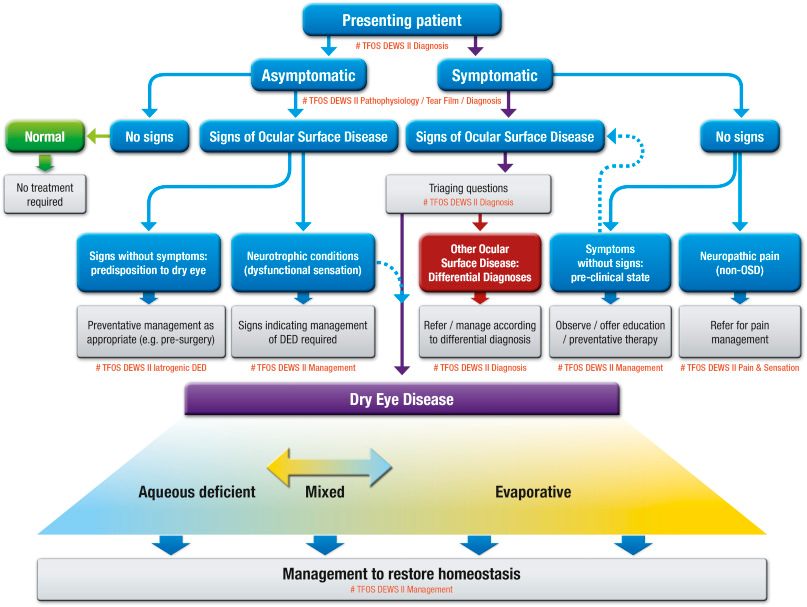 Figure 3: Dry eye classification.[24]
Prominently important is how the patient is feeling. For verification of the diagnoses there are questionnaires such as DEQ5 and OSDI.
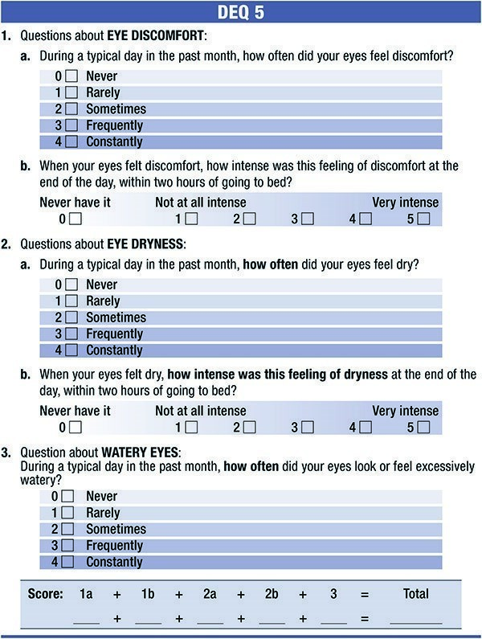
Figure 4: DEQ5 method Dry Eye is a self-assessment questionnaire for dry eye diagnoses[25, p. 58]
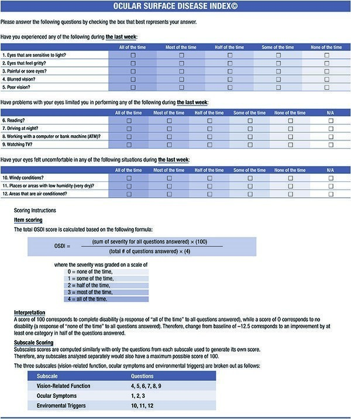
Figure 5: OSDI method [16 pp. 558]
The questionnaires answers in figure 4 and 5 give opportunity to calculate a score that will guide to more knowledge about the status of eye. This helps in verification and structure of a diagnoses where words are well-defined concepts to interpretation. Other ways can as well be performed by the use of biomarkers.
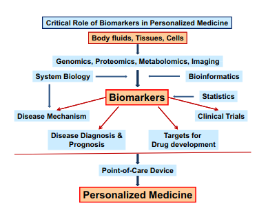
Figure 6: The role of biomarkers in personalized medicine. [26]
In figure 6 there is a range of possibilities that biomarkers can serve as pin pointers for accurate evaluation and treatment. “Tear analysis using recent proteomics/metabolomics/lipidomics technologies holds the promise for biomarker discovery, which is useful for achieving optimal management of ocular surface diseases through diagnosis, developing new treatment, prevention, and treatment response monitoring. Variations of human genetic, proteomic (proteins) and metabolic profiles imply the importance of personalized medicine, in which biomarkers have a central role for better diagnosis and response to treatment”[26]. Automated categorization dry eye by the tear film stability is possible by Keratograph detecting and mapping locations of tear breakup over time. A technique done with a fluorophotometer can obtain the disappearance of sodium fluorescein dye placed in the tear film has been used to record tear turnover. [27, p. 83, 84] The measurement of the tear turnover is recorded in % per minute. In order to express the turnover value in terms of the μl/min (sometimes called “flow”), it is necessary to either assume a value for the tear volume (typically 7μl40) or to measure the volume from the initial dilution of the instilled sodium fluorescein in the tears. Initial dilution is calculated by back extrapolation to time zero of the initial fluorescence decay. In this technique, it is themonophasic decay of fluorescence in the first 5 minutes after instillation of the fluorescein that is determined. [27, p. 83, 84] The programmed algorithm can infer the calculation of the data from tear turnover measurements curve obtained by a model to obtain the basal tear turnover rate from the formula:
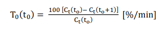
Where Ct(t) represents the fluorescent parameter presence in the tear film at time t[min], while t0 represents any given moment after instillation. [27, p. 83, 84] The fluorescein method makes automation of diagnosing dry eye disease possible [28]. Such biomarker could be easily obtained in pharmacy. Other technics as the meniscus model exist to calculate the stability of the tear-film searching a relationship between tear-meniscus parameters and tear-film breakup from the formula:
P = y(1/r1 + 1/r2)
The y is the surface tension of tear fluid, r1 the radius of the curvature of the tear meniscus, and r2 is the vertical component of the radius of curvature of the meniscus strip along the eyelid. The figure shows the representation of the negative hydrostatic pressure in each tear meniscus is inversely proportional to the radius of curvature of the concave meniscus and proportional to the surface tension of the tear fluid.[29, p. 649]
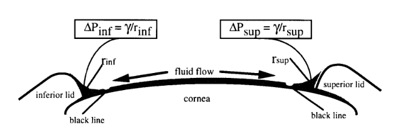
Figure 7: Relationship between the hydrostatic pressure in each tear meniscus and its radius of curvature pressure inferior and pressure superior represent the reduction in pressure in the menisci, r inferior and r superior are the radii of curvature of the menisci, and y is the tear surface tension. Arrows, flow of fluid from the precorneal tear film into the menisci. [29, p. 650]
The development of several algorithms has the advantage of building more sophisticated ones extracting determining parameters. [30] Thermograms could also be of value for diagnosis. [19] Normalized ocular surface temperature models classify the tears into categories, for example type 1: FTBUT >5 s and TMH >200 μm; type 2: FTBUT ≤ 5 s and TMH >200 μm; type 3: FTBUT ≤5 s and TMH≤ 200 μm; and type 4: FTBUT > 5 s and TMH≤ 200 μm. [31] Thermal imaging is an easy non-invasive method for detection. With the improvement of computational power and advances artificial intelligence using neural network, deep learning algorithms, especially Convolutional Neural Networks (CNNs), have been used in applications including retinal imaging. [32] These techniques make possible to make diagnostics also by using a phone with a camera. Then analyzed with tools such as Matlab that has an application for phone that can be used as a form of automatic assessment of dry eye disorder. [29][30] Visually the homeostasis issues can be recognized by slow blink rate and secretions of mucous membranes abnormalities [33, p. 407]. Accuracy with image recognition software is higher and can aim better prevention. [34] Psychosocial characteristics have been associated with dry eye such as sleep difficulty, mood disorders, anxiety, depression.[16 p. 563] That bring further challenges for automation, especially in prevention. Sleep difficulty information could be gathered from data automatically extracted from for example smartwatches. The prescription from for example cyclosporine [20 p. 47] and hydroxypropyl methylcellulose [35] helps in the treatment of dry eye disorder. While eye rotation exercises for example up and down, sideways clockwise and anti-clockwise can be important for heathy eyes. [22 p. 303] Other attentions that should be taken into relationship is that a protected eye could avoid infection of SARS‐CoV‐2 virus via the ocular surface.[36]
5.3 Software development
In an algorithmic perspective, the solution is found through a procedure for example making a methodology. This part confirms Stephen Wolfram idea that simple algorithms produce complexity and generate randomness, imagining the hypothesis that the universe is governed by algorithms[37]. This mechanistic thinking simplifies our existence. It is a reality that software is responsible for vast innovations. How to improve the performance was questioned. The method used was the implementation of a round-robin and swarm algorithm into something called roundswarm. It is seen that the use of a single core can be faster than using multiple cores by software. The results are important in architecture for software development. For example, if there is a time limit for completing the task, the need for efficiency of optimization and allocation of system resources. However, several factors can be considered, such as consistency, security and the ecosystem transactions per second. The script first searches for the available cores, targeting availability and measuring the performance result in a cycle after learning, does it again in order of the best response time. In order to achieve even better response time. The investigation into forms of automation leads to a thinking of algorithmic technique where it is important to perceive a set of actions. Accomplishing tasks through some steps of operations leading to the answer. The large Hadron Collider accelerates particles, the computer streams code and the heart pulses energy, all of which involve algorithms. In an ecological paradigm the quest of solutions, which act on the perspective given by Peter Kropotkin that aid is the main reason for survival, may be complemented with the findings from Darwin's evolutionary theory to unveil knowledge that enables forms of optimization. This is simulated with Bash joining several commands wrapping in a program that allows the interaction of operations. Making a shell of the programmed by wrapping functions in an action. It allows the automation of information, in this example the measurement of a command in Bash with different core affinity through a measurement around. Bearing in mind the assumptions that the execution of a given command takes different times, it can be canceled if it exceeds a given time, the computer can study and execute the command in order to obtain a better result. The idea is to exercise with which path takes less time to be done using different core. Performing the programmed action in different core according to the learning process. In a first phase, the command is launched cyclically, controlling its performance. Leading the measurement of the realization time ending when the given value is exceeded. Depending on the values obtained, the command is launched again in an organized sequence. Every time the command is tested it can give different results making it a complex exercise. Due to its unpredictability the following result returns different values, for example:
timeout 0.017 time taskset -c 0 ps -o cpuid,comm,args
Signal 15 (TERM) caught by ps (3.3.16).
ps:ps/display.c:66: please report this bug
In order to verify this fault, the timeout value must be adjusted to adapt to the place where the command is run. Failures check for potentially operational technical vulnerabilities. The help between using the quantum thinking that executes the commands of the operating system with timeout in Bash causes the abrupt end finding a code fault that affects the variable of line 66 of the file display.c. The code details can be found in GitLab https://gitlab.com/procps-ng/procps/-/blob/master/ps/display.c [38]. That avoids the intended display of the kernel tasks. The implementation of a measurement timer allows you to know the best performance path in round robin, then swam measuring its operation of the code in GitHub at https://github.com/tiagoeckhardt/algorithms/blob/main/roundswarm [39]. The measured result is generally experimented 0.017 seconds while in normal execution of the command the measured performance is often 0.019s. To go further by reducing the response time, a volatile disk is made in the random-access memory for example.
$ sudo mkdir /mnt/ramdisk
$ sudo mount -t tmpfs -o size=1m tmpfs /mnt/ramdisk
Putting the script and running it using bash -x in the directory to get better performance detailed information and the time.
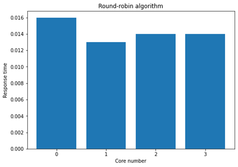
Figure 7: Performance of the round-robin algorithm.
In the figure 7 the response time in each core is observable and due to the quantum time given of 0.013 seconds the valid return of the command is made in core 1, 2 and 3. After knowing the values stored, there is the attempt to execute the command a second time.
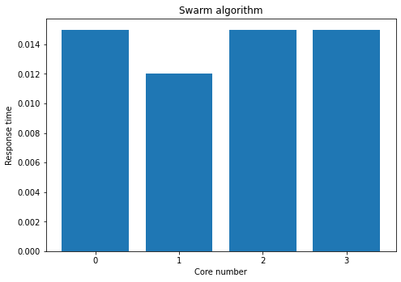
Figure 8: Performance of the swarm algorithm.
When the given execution value is the same and its completion is done, a better value is possible. Here the idea of a swarm algorithm in which the recognition of something favorable happens leading the behavior. The script is explained as having the following recipe:
Set result time format.
Search number of cores.
Round-robin cycle so that the core response time measurement and execution condition is completed.
Operation time measurement and maximum time reporting task of the current processes.
Collection and segregation of core information, values of the obtained classification and code result.
Swarm by weighted positioning cycle so that the group's core measurement and execution condition is completed.
Operation time measurement and maximum time of the reporting task of the current processes.
Collection and segregation of core information, values of the obtained classification and code result.
A file is produced that contains after the execution the core, response times for first round-robin then swarm. The code 0 is given when the command is successfully executed, while 124 when the referred bug occurs. Several tests were carried out trying to improve the execution time. Concluding that the time given to execute the task influences the performance of the algorithm. Software with defined to use specific core, usage of random-access memory partition and self-learning can serve of advantage while architecting software.
Discussion
The case presented uses several devices for its connection where technological needs originate an immense technosphere that emerges the human in a significant ecological footprint [40, p. 53]. This causes social, environmental and health problems[41]. "It is questionable what is right or wrong, all scientific knowledge is based on information that passes through our consciousness"[42]. It is unanimous that "human health is fundamental to what we do as informaticians" [43, p. 8]. Informatics improves quality of life [5, p. 18]. It is necessary to engender answers to extend the quality of life of living beings on the planet in which we live [2, p. 7]. At the same time increasing the need of exploration in communication to the environment.[44] The information permits adaptability to it, decreasing pollution that leads to a health environment [45, 46, 47, 48, 49, 50]. Subjectivity or abstraction can be useful to perceive vitality complexity in which several factors contribute to health. In the algorithms round-robin and swarm is perceived similarities to the real universe. The application of ecological footprint calculation with the Kaya Identity[51] equation by Yoichi Kaya and IPAT[52, p. 148] by Barry Commoner helps to understand ecological equilibrium. Where the IPAT equation gives the idea that environmental impact (I) is a result of population (P), affluence (A) and technology (T) represented by:
I = P x A x T
While the kaya equation shows that the global CO2 emissions from human sources (F) is a result of global population (P), world GDP (G), global energy consumption (E), GDP per capita (G/P), energy intensity of the GDP (E/G) and carbon footprint of energy (F/E). With the following equation:
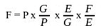
Raising questions about the possibility of improving technology a major source of life quality, with the perspective of knowing that the elements of the ecosphere have a life cycle[38, p. 203] where efficiency is scalable. Making pertinent the decision to research algorithms improving, interpreting and solving social issues in an ecological way [53]. In which convoluted algorithms benefit from simpler parts structuring efficiency and where the primary algorithm gains an advantage by having in its competence a whole. Remembering that in a complex program it is difficult to determine the result becoming sometimes undecidable [54, p. 401]. Biological calculation alternatives exist where Hamilton's path calculation is performed through a bacterial computer [55]. However, computer development is often industrial [56, p. 89]. Informatics is a utility that leverages essential results to discover potential while creating skills for a better world. As Professor Joaquim Borges Gouveia says: "...at this stage in information technology and information systems, the life cycle of knowledge or technology is the main adversary" [5, p. 77]. Facing increasingly interesting challenges in cognition.
Conclusion
This article explains that in the current context a research demonstrates that informatics is linked to the area of health. This is a breakthrough if we think it has already been linked more to the military or banking. Health can be improved by informatics, where there are systems that make agricultural interconnection and electronic trade possible and there is still room for this interaction to be improved, in particular on a platform capable of meeting several of the needs in a single event, it is important to think about ecosystems issues. The balance of nature is important to health. The interaction of the human with the environment is constant in an increasingly global dynamic balance. Bearing in mind that our management with the environment is done every time we breathe a continued exchange of what we exhale for what we inhale. The example of exhaled carbon dioxide enters the plant's photosynthesis cycle serves as a motto to collectively perceive about the pandemic we face. It is crucial to think how to communicate so broadly without causing environmental damage. What leads to the thought for this to be possible, the best form of social management is education and economic is through maximizing optimized efficiencies. The contribution to knowledge in the area of informatics is essential to develop philosophies suitable for a society in constant change. We can think in global terms, but we act locally. In this dualism of ideas by approaching them, the relevance of electronic commerce has increased. Creating ways of communication by facilitating thought of interaction that increases the likelihood for automation. If we think that the preexisting form of electrical impulses arises initially to communicate with the body itself and expanded globally with devices for outsourcing human contact that potentiates factors for well-being. It is preponderant to have a computer sustainability so that there is purity in nature. Algorithms that allow to optimize automatisms endowed with environmental considerations generate superior quality because they take into account global perfection. On the other hand, complex learning that now requires polluting technology leads to a better understanding of how to defend against disasters and catapult to a comprehensive understanding, which may enable, for example, an ecosphere on other planets. It is important to investigate genomic information action that allows an in-depth understanding of characteristics that allow the analysis of biological and bionanotechnological components that provide advances in prognosis and diagnostics and discovery of models that enable the manufacture of medicines with the use of computer tools. Algorithms can provide help in medical management and diagnoses from questionnaires to data interpretation. New technology can provide automation in algorithms, demanding to obtain from physiological to psychological data in an accessible way. While a condition on prevention theoretically could be done for example on particular food intake assessment, quality assurance of the results with help of automation. Software can be powerful way to connect automated algorithms. That can also warranty integrity of the results. There is a card trick [57] where there is the opportunity to guess any card that one picks. It consists in making three piles of nine cards, twenty-seven in total. Three times in arrow by question each time where the card is and putting the pile in the middle. After that there is the need to count fourteen cards to find the correct one. A good algorithm for health with the automation of the information provided can do a similar trick by providing accurate nutrition. Genomics can also be useful for example the research to analyze the effects of vitamin A. Eyes are one of the most important senses of humans is transposed to the way of living. Protection of the eyes can vital during the pandemic. In order to be viable with increasing precision, it is necessary to deduct biological computational models that make the ecosphere maintain its characteristics in accordance with life on earth. Thus, the study of efficiency in algorithmic interaction is central, which still has much to offer, and there are several unanswered questions. Hoping biology has come to stay, with the help of informatics.
References:
[1] Pedro Domingos "The Master Algorithm: How the Quest for the Ultimate Learning Machine Will Remake Our World", 2018.
[2] John Gammack, Valerie Hobbs e Diarmuid Pigott. “The Book of Informatics”, 2011.
[3] Jorge Freixo and Álvaro Rocha. "Information Architecture to Support Quality Management in Units", 14, 1-15, 2014.
[4] Ramsundar, Bharath, Peter Eastman, Patrick Walters, and Vijay Pande. “Deep Learning for the Life Sciences: Applying Deep Learning to Genomics, Microscopy, Drug Discovery, and More”, 2019.
[5] Eduardo Beira. "Protagonists of Information Technologies in Portugal: a collection of testimonies", Industrial Association of Minho, 2004
[6] Kaput, Jim e Raymond L. Rodriguez. “Nutritional Genomics: the Next Frontier in the Postgenomic Era. Physiological Genomics”. 16.2: 166-177, 2004.
[7] Edwin L. Cooper, and Melissa J. Ma. “Understanding Nutrition and Immunity in Disease Management”. Journal of Traditional and Complementary Medicine. 7, no. 4: 386-391, 2017.
[8] Food and agriculture organization of the United Nations 2020 [online] Available in: <http://www.fao.org/e-agriculture/> [Accessed 1 July 2020].
[9] Hwang, J.-S., Park, C.-Y., Song, H.-J., Kim, Y.-S., Kim, J., & Kim, J.-D. “Real-time Polymerase Chain Reaction System Using a Camera for Open Platform” (S & M 1887, Sensor Applications). Sensors and Materials, 31, 5, 1647-1656, 2019.
[10] Tiwari, Siddharth, Praveen C. Verma, Pradhyumna K. Singh, and Rakesh Tuli. 2009. "Plants As Bioreactors for the Production of Vaccine Antigens". Biotechnology Advances. 27, no. 4: 449-467.
[11] Travel Again. ATA Unveils Key Design Elements of IATA Travel Pass. Available in: <https://www.iata.org/en/pressroom/pr/2020-12-16-01/> [Accessed 9 May 2021].
[12] Mendes, Jorge, Tatiana M. Pinho, Filipe Neves dos Santos, Joaquim J. Sousa, Emanuel Peres, José Boaventura-Cunha, Mário Cunha, and Raul Morais. "Smartphone Applications Targeting Precision Agriculture Practices—A Systematic Review". Agronomy, agronomy. 10, No. 6: 855, 2020.
[13] David Goodsell "Bionanotechnology: Lessons from Nature." Hoboken, NJ: Wiley-Interscience, 2004.
[14] Leonard Adleman "Molecular Computation of Solutions to Combinatorial Problems" Science. 266, no. 5187: 1021-1024, 1994.
[15] Dartt, D.A, and M.D.P Willcox. "Complexity of the Tear Film: Importance in Homeostasis and Dysfunction During Disease." Experimental Eye Research. 117 (2013): 1-3.
[16] Wolffsohn, James S, Reiko Arita, Robin Chalmers, Ali Djalilian, Murat Dogru, Kathy Dumbleton, Preeya K. Gupta, Paul Karpecki, Sihem Lazreg, Heiko Pult, Benjamin D. Sullivan, Alan Tomlinson, Louis Tong, Edoardo Villani, Kyung C. Yoon, Lyndon Jones, and Jennifer P. Craig. "Tfos Dews Ii Diagnostic Methodology Report." The Ocular Surface. 15.3 (2017): 539-574
[17] Chen, L, C Deng, X Chen, X Zhang, B Chen, H Yu, Y Qin, K Xiao, H Zhang, and X Sun. "Ocular Manifestations and Clinical Characteristics of 535 Cases of Covid-19 in Wuhan, China: a Cross-Sectional Study." Acta Ophthalmologica. 98.8 (2020): 951.
[18] Lukasz Cwiklik "Tear Film Lipid Layer: A Molecular Level View". Biochimica Et Biophysica Acta. 1858, no. 10: 2421-2430. (2016) https://doi.org/10.1016/j.bbamem.2016.02.020
[19] Vicnesh, Jahmunah, Shu L. Oh, Joel K. E. Wei, Edward J. Ciaccio, Kuang C. Chua, Louis Tong, and Acharya U. Rajendra. "Thoughts Concerning the Application of Thermogram Images for Automated Diagnosis of Dry Eye – a Review." Infrared Physics & Technology. 106 (2020): 103271.
[20] Dana, Bradley, A Guerin, Pivneva, Stillman, Evans, and Schaumberg. "Estimated Prevalence and Incidence of Dry Eye Disease Based on Coding Analysis of a Large, All-Age United States Health Care System." American Journal of Ophthalmology. 202 (2019): 47-54.
[21] Lee, Sharon Yeo, Han T. Aung, and Louis Tong. "Agreement of Noninvasive Tear Break-Up Time Measurement between Tomey Rt-7000 Auto Refractor-Keratometer and Oculus Keratograph 5m." Clinical Ophthalmology (auckland, N.z.). 10 (2016): 1785-1790. https://dx.doi.org/10.2147%2FOPTH.S110180
[22] Sasmita Gumansingh, Amandeep Kaur, Vipin Kumar, Sheetal. Verma Healthy Eyes: Ayurvedic Perspective (2020) Ayurveda and integrated medical sciences.
[23] I.K. Garaszczuk, M. Mousavi, D.H. Szczesna-Iskander, A. Cerviño Expósito, D.R. Iskander, A 12-month prospective study of tear osmolarity in contact lens wearers refitted with daily disposable soft contact lenses, Optometry and Vision Science, in press
[24] Craig, Jennifer P, Kelly K. Nichols, Esen K. Akpek, Barbara Caffery, Harminder S. Dua, Choun-Ki Joo, Zuguo Liu, J D. Nelson, Jason J. Nichols, Kazuo Tsubota, and Fiona Stapleton. "Tfos Dews Ii Definition and Classification Report." Ocular Surface. 15.3 (2017): 276-283.
[25] Chalmers, Robin L., Carolyn G. Begley, and Barbara Caffery. 2010. "Validation of the 5-Item Dry Eye Questionnaire (DEQ-5): Discrimination Across Self-Assessed Severity and Aqueous Tear Deficient Dry Eye Diagnoses". Contact Lens and Anterior Eye. 33, no. 2: 55-60.
[26] Zhou, Lei, and Roger W. Beuerman. "Tear Analysis in Ocular Surface Diseases." Progress in Retinal and Eye Research. 31.6 (2012): 527-550.
[26] Tomlinson, Alan, and Santosh Khanal. "Assessment of Tear Film Dynamics: Quantification Approach." The Ocular Surface. 3.2 (2005): 81-95.
[28] Su, Tai-Yuan, Zi-Yuan Liu, and Duan-Yu Chen. "Tear Film Break-Up Time Measurement Using Deep Convolutional Neural Networks for Screening Dry Eye Disease." Ieee Sensors Journal.
[29] Golding, TR, AS Bruce, and JC Mainstone. "Relationship between Tear-Meniscus Parameters and Tear-Film Breakup." Cornea. 16.6 (1997): 649-61
[30] Khanal, Santosh, Alan Tomlinson, Angus McFadyen, Charles Diaper, and Kannu Ramaesh. 2008. "Dry Eye Diagnosis". Investigative Ophthalmology & Visual Science. 49, no. 4: 1407.https://doi.org/10.1167/iovs.07-0635
[31] Su, Tai-Yuan, and Shu-Wen Chang. "Normalized Ocular Surface Temperature Models for Tear Film Characteristics and Dry Eye Disease Evaluation." The Ocular Surface. (2020).
[32] Stegmann, Hannes, dos S. V. Aranha, Alina Messner, Angelika Unterhuber, Doreen Schmidl, Gerhard Garhöfer, Leopold Schmetterer, and René M. Werkmeister. "Automatic Assessment of Tear Film and Tear Meniscus Parameters in Healthy Subjects Using Ultrahigh-Resolution Optical Coherence Tomography." Biomedical Optics Express. 10.6 (2019): 2744-2756.
[33] Karakaya, M, and RE Hacisoftaoglu. "Comparison of Smartphone-Based Retinal Imaging Systems for Diabetic Retinopathy Detection Using Deep Learning." Bmc Bioinformatics. 21 (2020).
[34] He, Kaiming, Xiangyu Zhang, Shaoqing Ren, and Jian Sun. "Delving Deep into Rectifiers: Surpassing Human-Level Performance on Imagenet Classification." (2015): 1026-1034.
[35] Hendi A, Umair Hassan M, Elsherif M, Alqattan B, Park S, Yetisen AK, and Butt H. 2020. "Healthcare Applications of PH-Sensitive Hydrogel-Based Devices: A Review". International Journal of Nanomedicine. 15: 3887-3901.
[36] Lawrenson, John G, and Roger J. Buckley. "Covid-19 and the Eye." Ophthalmic and Physiological Optics. 40.4 (2020): 383-388.
[37] Kalmbach. "The Physics arXiv Blog" <https://www.discovermagazine.com/the-sciences/new-theory-of-everything-unites-quantum-mechanics-with-relativity-and-much> [Accessed 30 April 2021]
[38] Topi Miettinen, "ps: add lots of sorting functions" GitLab repository 2021 [online] Available in: <https://gitlab.com/procps-ng/procps/-/blob/master/ps/display.c> [Accessed 29 April 2021]
[39] Tiago Eckhardt, "algorithms" GitHub repository 2021 [online] Available in: <https://github.com/tiagoeckhardt/algorithms> [Accessed 29 April 2021]
[40] Rien Dijkstra. “Data Center 2.0: The Sustainable Data Center”, 2014.
[41] Analysis James Griffiths, C., 2020. "China Has Made Major Progress On Air Pollution. Wuhan Protests Show There's Still A Long Way To Go". [online] Cnn. Available from: <https://edition.cnn.com/2019/07/10/asia/china-wuhan-pollution-problems-intl-hnk/index.html> [Accessed 1 July 2020].
[42] Lanza, R P, and Bob Berman. “Beyond Biocentrism: Rethinking Time, Space, Consciousness, and the Illusion of Death”, 2017.
[43] Bakken, Suzanne. “Doing What Matters Most. Journal of the American Medical Informatics Association”. 26, no. 1: 1-2, 2019.
[44] Montoya, José M., Stuart L. Pimm, and Ricard V. Solé. “Ecological networks and their fragility”. Nature. 442 (7100): 259-264, 2006.
[45] Feng, Cindy et al. (2016) "Impact Of Ambient Fine Particulate Matter (PM2.5) Exposure On The Risk Of Influenza-Like-Illness: A Time-Series Analysis In Beijing, China". Environmental Health, vol 15, no. 1, . Springer Science And Business Media LLC, doi:10.1186/s12940-016-0115-2.
[46] Akash Gupta and Amir Gharehgozli (2020) Developing a Machine Learning Framework to Determine the Spread of Covid-19. Ssrn Electronic Journal.
[47] Gianpaolo Coro (2020) A global-scale ecological niche model to predict SARS-CoV-2 coronavirus infection rate.
[48] Lee, Greg I et al. (2014) "Exposure To Combustion Generated Environmentally Persistent Free Radicals Enhances Severity Of Influenza Virus Infection". Particle And Fibre Toxicology, vol 11, no. 1. Springer Science And Business Media LLC, doi:10.1186/s12989-014-0057-1.
[49] de Jongste, Johan et al. (2004) "Traffic-related air pollution and the development of asthma, allergy and respiratory infections: extended follow-up of a birth cohort". Epidemiology, vol 15, no. 4, p. S64. Ovid Technologies (Wolters Kluwer Health), doi:10.1097/00001648-200407000-00157.
[50] Avouris, Nicholas M, and Bernd Page (2011) Environmental Informatics: Methodology and Applications of Environmental Information Processing. Dordrecht: Springer.
[51] Tavakoli, Azadeh "How Precisely «Kaya Identity» Can Estimate GHG Emissions: A Global Review", 2017 Jordan Journal of Earth and Environmental Sciences.
[52] Adenle, Ademola A., Marian R. Chertow, Elisabeth Henrica Maria Moors, and David J. Pannell. Science, Technology and Innovation for Sustainable Development Goals Insights from Agriculture, Health, Environment, and Energy. 2020. https://dx.doi.org/10.1093/oso/9780190949501.001.0001 .
[53] Swiader, M, S Szewranski, J.K Kazak, Hoof J. van, D Lin, K Iha, S Altiok, Hoof J. van, and I Belcakova. "The Application of Ecological Footprint and Biocapacity for Environmental Carrying Capacity Assessment: a New Approach for European Cities." Environmental Science and Policy. 105 (2020): 56-74.
[54] Mueller, John P, and Luca Massaron. “Algorithms for Dummies”. Hoboken, NJ: John Willey & Sons, 2017.
[55] Baumgardner, Acker, Adefuye, Crowley, DeLoache, Dickson, Heard, A. T, Nickolaus, Ritter, Shoecraft, Treece, Unzicker, Valencia, Waters, Campbell, Heyer, Poet e Eckdahl, “Solving a Hamiltonian Path Problem with a bacterial computer,” BioMed Central, 2009.
[56] Gordana Dodig-Crnkovic. “Scientific Methods in Computer Science”. Department of Computer Science Mälardalen University, 2002.
[57] Roy Quintero. "On a Mathematical Model for an Old Card Trick." Recreational Mathematics Magazine. 4.7 (2017): 65-77. Print.